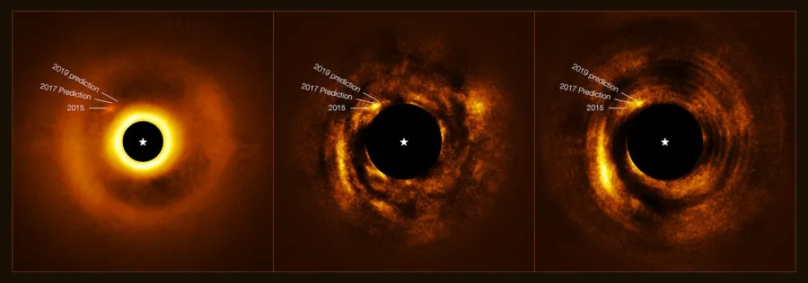

24. April 2023
Protoplanet in der Scheibe um HD 169142 bestätigt
Eine neue Auswertung mehrjähriger Beobachtungen mit dem Instrument SPHERE am Very Large Telescope der ESO hat einen entstehenden Planeten um den Stern HD 169142 bestätigt. Die drei Teilbilder zeigen die Scheibe um den abgedeckten Stern; markiert sind die Position des Protoplaneten 2015 und die vorhergesagten Positionen für 2017 und 2019.
Der Protoplanet hat etwa die Masse Jupiters und zieht eine kreisförmige Lücke in die Scheibe. Er umrundet den Stern in etwas größerem Abstand als Neptun die Sonne und hinterlässt eine spiralförmige Spur im Scheibenmaterial.
Quelle: ESO Picture of the Week: "A new planet is born" (potw2317a)., 24.04.2023